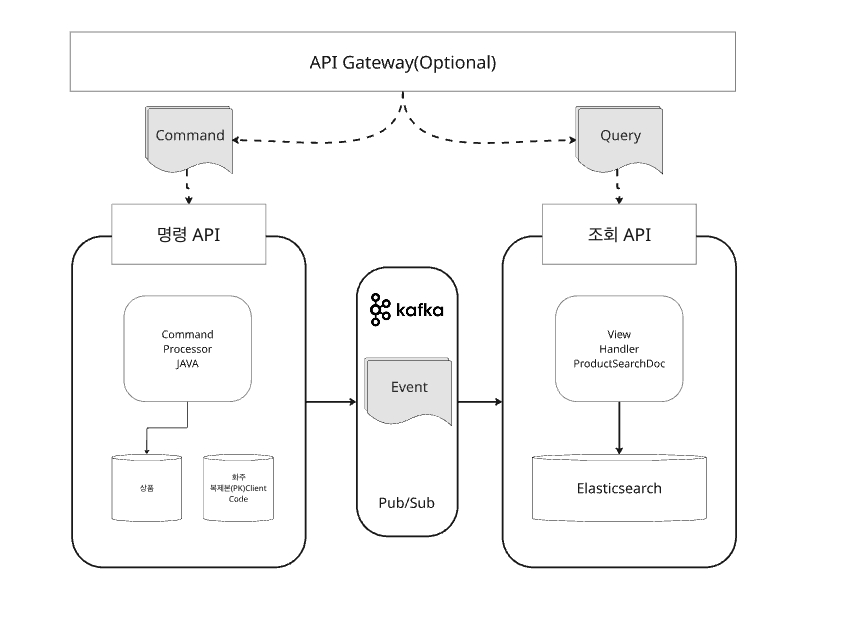
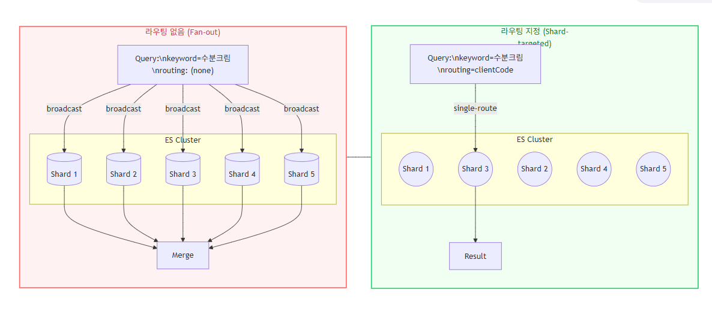
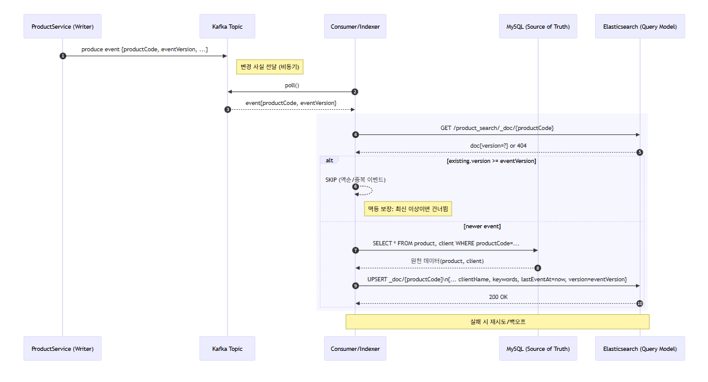

WMS 도메인에서는 운영자가 상품 × 화주 정보를 다중 필드 조건, 부분일치, OR 조합, 정렬, 페이징으로 빠르게 검색해야 했습니다.
초기에는 MySQL 조인 기반 통합 조회로 구현했지만, 다중 LIKE/OR와 정렬·페이징이 겹치며 인덱스를 효율적으로 사용하기 어려웠습니다.
쓰기와 정합성은 MySQL이 담당하고, 검색과 조회는 Elasticsearch가 담당하도록 CQRS 관점으로 조회 경로를 분리했습니다.
Kafka 이벤트로 변경을 전달하고, 검색 전용 문서를 업서트하여 RDB 조인에서 검색 인덱스 기반 조회 구조로 전환했습니다.
기술 스택
Spring Boot 3.xSpring Data ElasticsearchSpring KafkaSpring Data JPAMySQL 8Elasticsearch 8.13KafkaRedisDockerMDCJMeter
전체 아키텍처 설계

ProductService의 Command 경로는 MySQL 정합성을 담당하고, Kafka 이벤트를 통해 Query 경로의 Elasticsearch 검색 문서를 갱신합니다.
인덱스 모델 설계
RDB 스키마를 그대로 복제하지 않고 화면과 검색에 실제로 필요한 속성만 선별해 ProductSearchDoc 검색 전용 문서로 재구성했습니다.
문서 ID는 productCode로 고정해 동일 상품은 항상 같은 문서를 갱신하도록 했고, 주요 필터인 clientCode는 라우팅 키로 사용했습니다.
역순·중복 이벤트를 막기 위해 애플리케이션 레벨의 version을 문서에 저장하고, 기존 버전보다 오래된 이벤트는 건너뛰도록 했습니다.
lastEventAt을 남겨 색인 지연이나 누락도 추적할 수 있게 했습니다.
라우팅 최적화

검색 요청에 clientCode 라우팅 값을 명시해 쿼리가 모든 샤드로 확산되는 fan-out을 줄이고, 필요한 샤드 중심으로 조회되도록 했습니다.
핵심 기술 의사결정
1. RDB 조인 조회에서 ES 검색 인덱스로 전환
문제
다중 LIKE/OR, 정렬, 페이징, 조인이 겹치며 임시 테이블, 광범위한 인덱스 스캔, CPU/IO 스파이크가 발생했습니다.
선택
명령 모델은 MySQL, 조회 모델은 Elasticsearch로 분리해 검색 전용 인덱스를 구축했습니다.
효과
트랜잭션 워크로드와 검색 워크로드를 분리하여 인덱스 경합과 버퍼 풀 압박을 구조적으로 줄였습니다.
2. 문서 ID 고정 + 버전 비교로 멱등 업서트
문제
Kafka 이벤트는 중복 전달이나 재처리, 역순 처리가 발생할 수 있어 같은 상품 문서가 잘못 갱신될 위험이 있었습니다.
선택
문서 ID를 productCode로 고정하고, 기존 문서의 version과 이벤트 버전을 비교했습니다.
효과
이미 최신 버전이 존재하면 skip 처리해 중복/역순 이벤트에도 같은 결과를 유지했습니다.
3. 검색 비용 절감 옵션 적용
문제
검색 응답에서 불필요한 필드와 전체 건수 집계는 네트워크, 역직렬화, 카운트 비용을 증가시켰습니다.
선택
_source include로 필요한 필드만 반환하고, 목록 화면에서는 track_total_hits(false)를 적용했습니다.
효과
검색 응답 비용을 줄이고, 페이지네이션은 search_after 기반으로 확장 가능한 구조를 고려했습니다.
업서트 흐름

ProductService가 이벤트를 발행하면 Consumer/Indexer가 기존 ES 문서 버전을 확인하고, 최신 이벤트일 때만 MySQL 원천 데이터를 읽어 검색 문서를 업서트합니다.
성과 요약
구분
개선 전
개선 후
조회 경로
MySQL 조인 + 다중 LIKE/OR
Elasticsearch 검색 전용 문서
정합성
RDB 중심
MySQL 정합성 + Kafka 이벤트 동기화
멱등성
재처리/역순 이벤트 위험
문서 ID 고정 + version 비교
검색 비용
전체 필드, 전체 건수 집계 부담
_source include, track_total_hits(false), routing 적용